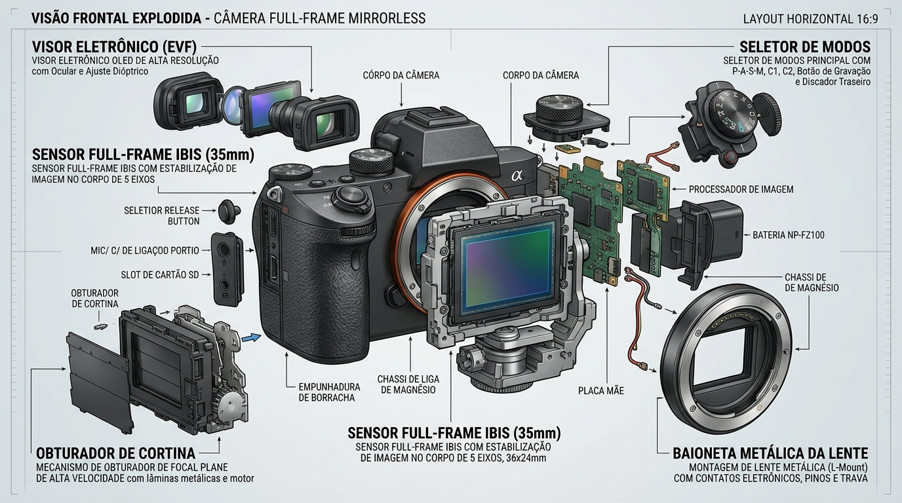

1. [Visor EVF]
Display OLED de alta resolução que exibe em tempo real a imagem digital capturada pelo sensor. Permite visualizar com precisão a exposição, balanço de branco e foco antes de registrar a foto.
2. [Seletor de Disparo]
Disco giratório no topo da câmera que alterna os modos de disparo, como Manual, Prioridade de Abertura ou Velocidade. Facilita o controle rápido sobre a automação e parâmetros da exposição.
3. [Sensor Full-Frame]
Componente de $36 \times 24\text{ mm}$ que converte a luz em sinal elétrico, oferecendo alta qualidade de imagem. Garante excelente desempenho em pouca luz e maior controle da profundidade de campo.
4. [Obturador Mecânico]
Mecanismo físico composto por lâminas móveis posicionadas à frente do sensor. Abre e fecha em frações de segundo para regular o tempo exato de exposição da imagem à luz.
5. [Baioneta de Montagem]
Encaixe de alta resistência que fixa a lente ao corpo da câmera com precisão mecânica. Contém conectores elétricos para comunicação rápida do foco automático e abertura..